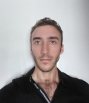

NOM : Sayah
PRENOM(s) : Fayçal Adam
AGE : 24
NATIONALITE : Franco-marocaine
GSM : (212) 6 61 40 83 94
Email : sayah.faycal@gmail.com
Adresse : Maroc, Rabat, Hay Riad, secteur 14, Avenue Addolb, Residence Assanaoubar, Imm A, Apt 6
2012-2013 : Baccalauréat Scientifique au Lycée Descartes - Rabat
2013 - 2015 : DEUG en « Sciences de la Vie (SVI) » à la Faculté des Sciences de Rabat (FSR)
2015- 2019 : Etudes de Pharmacie à la Faculté de Médecine et de Pharmacie de Rabat (FMPR), actuellement en 5 ème année
Du 17/07/2018 au 28/08/2018 (6 semaines) : Stage Officine de 4ème année à la “Pharmacie Marjane” - Marjane, Hay Riad